|  |
| |
This pamphlet was published in the same year (1942) in which the U. S. produced Bulletin #1935 and the film, “Hemp for Victory.” It shows that Germany too made an effort to increase its hemp production during World War II. “The Humorous Hemp Primer” is reproduced here in its entirety, with English translations by Eric Steinhauer.
(The cover shows the male plant eager to pollinate the willing female.)
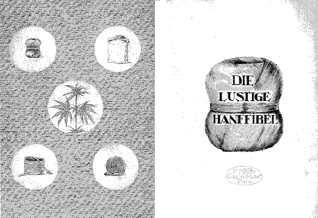
In changing times this Hemp Primer is published. It shows the importance of growing hemp. In humorous, but also convincing form, it shall serve to resolve any doubts about the production of hemp and shall serve to revitalize the marsh lands.
(General Manager of the Reich’s Nutritional Institute)
Published by the Reich’s Nutritional Institute
Berlin, 1943
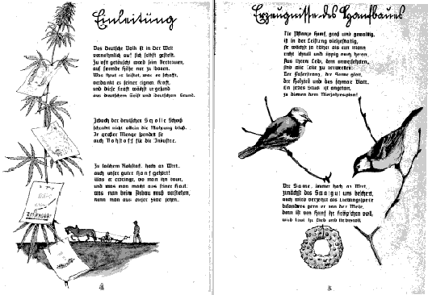
In today’s world, the German people must rely on themselves. Too often in the past we have been disappointed when we relied on others. What Germany produces and creates today is thanks only to its own strength, and this strength grows from the German spirit and the German soil.
Crops should not only provide food in large quantities, they can provide raw materials for industry.
Among such raw materials of especially high value is hemp. What it provides, where it is planted, what is made from it, what must be understood to grow it, can all be learned from this primer.
Products of Hemp Cultivation
The plant itself is large and powerful, and its output is multifaceted. It grows higher than man, very quickly. All parts of its “body” can be utilized: the fiber strand, the smooth seed, the woody part and the narrow leaf. Every part is dedicated to serve the four-year plan.
The seed, of high value, provides sowing material and is the favored meal of the titmouse, because when it eats hemp seed, its song is loud and full of love.
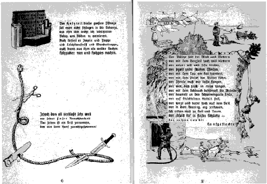
The woody part of this large plant is not to be thrown out, since it can easily be used for surface coatings for the finest floors. It also provides paper and cardboard, building materials and wall paneling. Further processing will even produce wood sugar and wood gas.
However, all the above pale in comparison to the usefulness of its fiber. Only rarely has it happened that a rope made of hemp has failed.
Those who need clothes lines through wind and storm, who aspire to the highest peaks with a rope, who want to weave and tightly bind, who sail through the strongest of winds, who need a cable at port, who lead bulls by a line, who lasso wild horses, who wish to catch fish with a net,
who want to fight fires with a hose, who dangle at the end of swim vests, who need to climb up high rope ladders, who dance and do gymnastics high upon a rope, who in the boxing ring are punched quite hard, and need support at the ropes, who repel down deep shafts—should consider only the rope made of hemp.
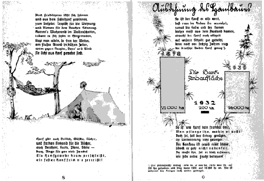
More peaceful products can also be spun and produced from hemp. For example: carpets for apartments; straps for belts and corsets. Or, come the weekend, at the forest’s edge dreams are sweet in a hammock woven of dense hemp fiber.
Hemp also provides towels and linens and strong bindings for books. Also fustian, belts, sacks -- items of much use!
A HEMP WEAVE HARDLY WEARS DOWN
ITS TIGHTLY WOVEN ROPE WILL NEVER TEAR!
Expansion of Hemp Production
So you see that hemp is worthy of having its cultivation increased. Hemp fiber and seed are primarily imported, even though it would grow well on our soil. Sixty years ago, German ground produced much more hemp.1
So you see that hemp is no stranger to us, SO PLANT IT WHERE IT IS SUITED! However, if you want the production to be plenty, be sure to prepare properly. Hemp cultivation is not difficult, but it doesn’t happen on its own. If you want the crop to make you happy, it must be tended to.
1. Production was 21,000 hectares in 1878. By 1932 it had fallen to only 200 hectares, but in 1939 production was back up to 16,000 hectares. During the war years production has continued to climb.
But please remember one important thing: hemp production should never displace breads and fruits from any fields. Such a move would have bitter consequences. Instead, cultivate hemp where it belongs. This is explained below.
Soil and Location
Hemp grows best—as indicated before—in low-level marshes. Here humus and moisture provide the ideal environment. Hemp, the little glutton, uses much water over its lifespan, which it sucks through deep roots from the bottoms of marshes.
As much as hemp likes water, too much makes it sad. If the ground is constantly soaked, hemp stays small and pale.
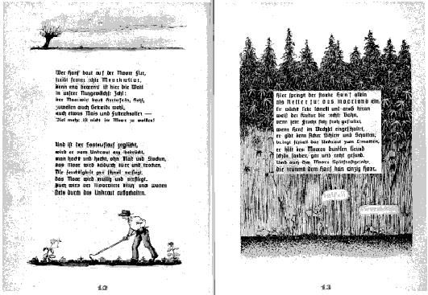
He who grows hemp in the moor is carrying on true moor-culture since the options are quite limited: The moor farmer grows potatoes, cabbage, and some grains as well as corn. Little else can grow here.
When growing other crops in the marsh, even if the seeds sprout nicely, the weed growth is extensive. Hacking and hoeing without rest, the moor gets dry and withered. As the moisture seeps out, the moor gets dusty and useless. The farmer’s efforts are constantly hindered by strong weed growth.
Here the mighty hemp plant enters
as saviour of the moor lands. It grows quick and large and helps cultivate the land. Most any crop is happy to alternate with hemp, since hemp’s shady umbrella forces weeds to their knees. It keeps the moor ground dark, clean and healthy. Also the moor’s tendency to late rust doesn’t bother hemp a bit.
Help!! We are suffocating!
Crop Sequence and Prior Crops
Above we have indicated where hemp grows, and that hemp is not demanding of prior crops. It grows well after fruits, corn, vegetables, grasses and grains.
Moreover, shady hemp—this is clear, does provide the best prior crop, because its tall, wide, dense growth.
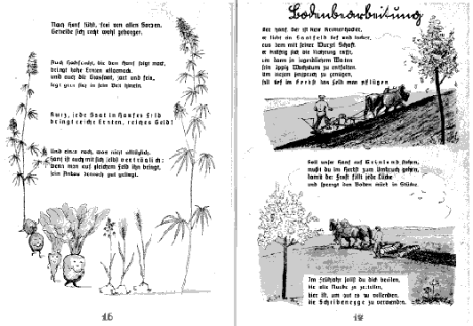
After hemp, all grains grow well and without problems.
Also fruits which follow hemp bring larger crops, as do grasses, delicate and tender when they lie down in hemp’s bed.
IN SHORT, ANYTHING SOWN
IN HEMP’S FIELDS
WILL BRING RICH HARVESTS
AND MUCH MONEY.
Another thing which is not common: hemp is compatible with itself. Grow it on the same field over and over again and production still thrives.
Hemp likes to be sown in a deep and loose field, where it can reach deep with its root for nourishment, resulting in dense, luxurious growth. To accommodate this demand, plow deeply in the fall.
If hemp is to grow on virgin soil, the ground must be loosed in the fall so that water and frost can fill all crevices and crumble the ground into small pieces.
In the spring the soil must be smoothed. It is best to use a disk harrow.
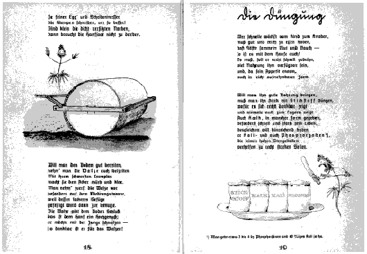
The finer the harrow knives cut the soil clumps, the better. This way hemp need not starve or suffer.
To prepare the ground even better, use a roller early on. It makes the field crumbly and clear. Especially in the moor, the heavy roller solidifies the loose ground. Hemp loves this solid foundation.
Fertilizer
To grow quickly from child to adult, one needs sufficient nutrition; hemp is no different. If you want it to grow real quickly, provide nutrition since its appetite is enormous for foods in easily absorbed form.
If you wish to give good nourishment, be generous with the nitrogen. Hemp will be grateful and will shoot straight up without hesitation. Also calcium in various forms provide it strength and speed. Potash and phosphorous3 aid its high stems and lead to especially strong ropes.
(NITROGEN • CALCIUM • POTASH
• PHOSPHORUS)
3. Use about 3-4 deciliters of phosphoric acid and 40% potash per hectare.
“Much too late!”
“Fertilizing our heads is worthless!”
Be sure, however, that you fertilize early! The best time is prior to sowing so the fertilizer has time to seep into the ground properly before it is called upon.
Pouring fertilizer on hemp’s head will rarely please it, since it will never have time to act. If hemp’s stem or leaf growth is not good, it is usually due to other causes: i.e., soil is too saturated, ground was too damaged and not well prepared, soil too loose and not harrowed and rolled, so hemp cannot gain its proper momentum. At this point fertilizing never helps and is just a waste of time.
Also manure provided to the soil in the fall will accelerate growth dramatically, since the rich mass of bacteria provides much nutrition.
Regardless of the fertilizer selected, it must enter the ground early. After all, what good is the best food if the water has no time to make it soluble?
So spread your fertilizer early, it’s your best gift to your hemp. It will provide the quickest growth with dense, luxurious leaves.
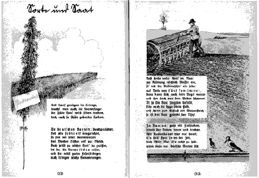
If hemp is to yield much product, pay attention to the seed type. Late hemp will seldom dry in time even with the best bundling.
German varieties, all well-bred, are targeted to early blooming. It’s ready for harvest three weeks earlier than any foreign seed. Make sure you use seeds guaranteed to ripen and that produce strong stems and many seeds.
Make sure your hemp finds plenty of water and use a “driller” to seed two inches into the ground. This prevents birds from stealing your seed before it sprouts. After seeding, once again, use the harrow and the roller gently.
Seeding should occur as soon as the ground is dry (in the spring). If you only have access to foreign seeds, the end of April is the right time. But middle of May is not too late if you have access to German seeds.
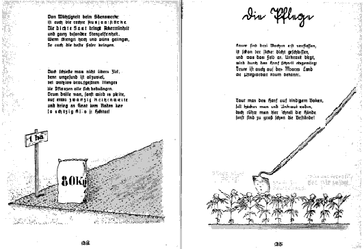
It is also important that your seed density is right. High density provides field integrity and quality stalks. When stems grow long and thin, they provide the best fibers.
However, don’t over do it since healthy growth isn’t possible if the plants crowd each other. Set your drilling unit on row-width 20 and plant about 80 kilograms of seed per hectare.
After only three weeks, the field is dense with growth. And any weeds which may have been around are choked off by this dense growth. Thus, even in the moor ground, need for tending the crop is virtually unheard of.
If you plant in cohesive soils (clay), hoeing and weed removal are advised, but you must be quick, otherwise the plants will be too large to work around.
“Care not required!”
“Take the rest of the day off.”
“We’ll take care of the weeds.”
As summer passes through the land, hemp’s seed growth quickly ripens. The seeds then grow in size. If you don’t want sterile seeds, you must wait until at least half of them have a ripe gray-brown color and the seeds are full and ready to burst out of their hulls. When the seeds are fully brown, the hemp must be harvested. To accelerate the harvest you must mechanize. In most cases, a mowing machine with manual bunching is advised. Even with hemp of exceptional length this works quite well.
MOWING MACHINE WITH
MANUAL BUNDLING.The disadvantage with this approach is that much manpower is required to bundle and tie the stems and remove them from the mower’s path.
Using a bailing mower will save much work, time and effort. However, it can only be used with lower-grown crops. That is why German investors provided us with a hemp mower-bailer which neatly cuts and ties and places hemp to the side. It also can be used for regular grains.
So the crops can dry out quickly, carefully stack them in round manner using 16
bundles standing upright. When nicely placed, strong winds can blow right through them for rapid drying.
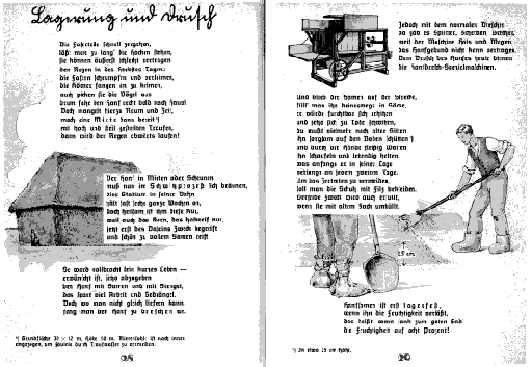
Fiber-stalks deteriorate quickly if left out to dry too long. They cannot tolerate fall rains. The fibers shrink and gum up and the birds pick at them. So drive your hemp home soon. If you lack time, or space at home, stack your crop high with a steep top to move rain water off quickly.4
Hemp in the shed or stack now browns in the sweating process. This stage of its life cycle lasts about six weeks and is healthy for the plant since the seeds grow into full ripeness and readiness.
Now hemp’s life-cycle is completed. At this point delivery of stems and seeds as one is best. It saves work and problems. However, if this is not possible, thrashing is in order.
4. Stack should be 30 x 12 meters and 10 meters high. Make sure base of stack is tapered outwards to prevent rotting at the bottom.
Using a conventional thrasher would create problems, since it cannot handle hemp. To thrash hemp, a special hemp hand-thrasher is required.
Never place the seeds in sacks, since they would get terribly hot and sweat themselves to death. Rather use the proven method of spreading seeds gently on the floor.5 Use your hands and a shovel to gently turn and keep the seed alive. Early on it must be turned every other day. To avoid damage, wear felt shoes or cover your shoes with sacks.
Hemp seed is only ready for storage when its humidity has sunk to eight percent.
5. Lay seeds out up to 25 cm (10 inches) deep for drying.
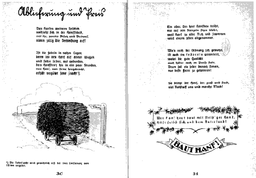
Hemp’s further story happens in the hemp factory. Make sure you make early contact here concerning sale and delivery.
If the factory is close by, pile the hemp on your cart and bring it in. Rail freight will be reimbursed for hemp delivered from far away.6
6. Generally, rail freight is reimbursed for distances over 10 kilometers (6 miles).
Anyone who grows hemp today need not fear a lack of a market. Because hemp, as useful as it is, will be purchased in unlimited amounts.
Naturally, a fixed price is guaranteed, whereby higher quality product will receive a
premium price. Therefore you are advised to strive to grow the best fibers.
Large, strong hemp provides us raw materials and can bring much revenue!
HE WHO GROWS HEMP WITH
INDUSTRIOUS HANDS HELPS
HIMSELF AND THE FATHERLAND.
GROW HEMP!
the authorized on-line version of Jack Herer’s “The Emperor Wears No Clothes”
| previous page | Appendix | next page |
|
 |
 |
 |
 |